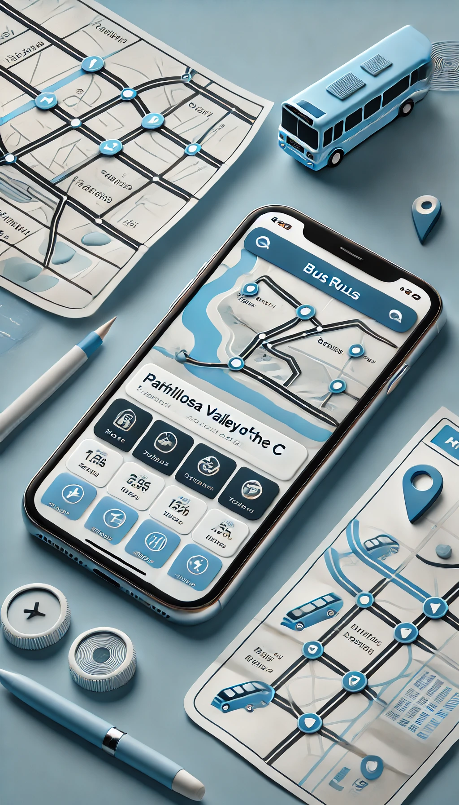

Descubre la forma más fácil de llegar a tu destino en bus
ChillosGo es la aplicación diseñada para quienes buscan una manera rápida, confiable y sencilla de moverse en transporte público dentro del Valle de los Chillos. Con nuestra app, los usuarios pueden encontrar la mejor ruta en autobús desde su ubicación actual hasta cualquier destino dentro del valle, sin tener que preocuparse por la planificación y sin perder tiempo.